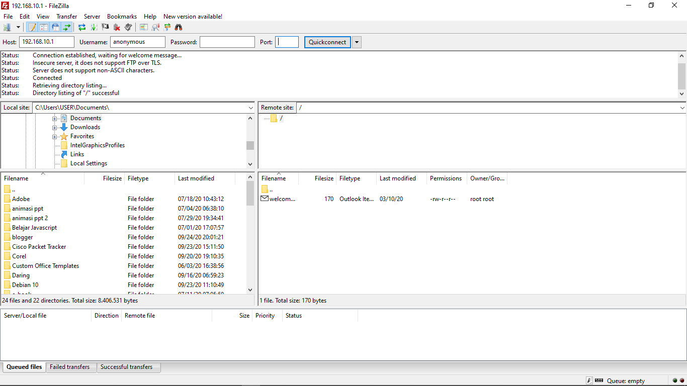

Apa Itu FTP Server?
FTP Server adalah suatu server yang menjalankan software yang berfungsi untuk memberikan layanan tukar menukar file dimana server tersebut selalu siap memberikan layanan FTP apabila mendapat permintaan (request) dari FTP client. Protokol ini juga sangat penting di dalam server anda apabila kita mau upload file bisa menggunakan service ini. Dan banyak lagi manfaat dari protokol ftp ini, dan di debian menyediakan 2 paket yang dapat menjadi ftp server yaitu proftpd dan vstpd. Keduan paket tersebut memiliki keistimewaan masing-masing dan disini saya mencontohkan yang proftpd.
Langkah-Langkah Instalasi dan Konfigurasi FTP dengan Filezilla
1. Login ke debian dengan menggunakan user root.
2. Kemudian cek IP servernya, disini saya sudah men-settingnya.
3. Setelah itu install FTP nya dengan mengetikkan perintah apt-get install proftpd.
4. Di sini saya ada pesan kesalahan atau error disebabkan saya belum memasukkan DVD binary 2.
6. Jika sudah memasukkan DVD binary 2 ketikan apt-get install proftpd jika ada pertanyaan "y/n" pilih "y"
7. Di sini setelah instalasi ada error code, jika ada error code tersebut ulangi perintah apt-get install proftpd. Tetapi jika tidak ada error code tidak usah untuk mengetikkan perintah tersebut lagi.
8. Setelah itu ada perintah untuk memperbaiki error code tersebut yaitu apt --fix-broken install.
9. Di sini saya disuruh untuk memasukkan DVD binary 1. Masukkan DVD binary 1 kemudian enter.
10. Jika sudah cek instalasi dengan mengetikkan perintah apt-get install peroftpd. Jika sudah ada tulisan 0 upgrade, 0 newly installed, 0 to remove and 0 not upgraded . Jika sudah ada tulisan tersebut berarti sudah selesai.
11. Kemudian masuk ke konfigurasi dengan mengetikkan perintah nano /etc/proftpd/proftpd.conf
12. Kemudian cari kata DefaultRoot dan hilangkan tanda pagarnya. Jika sudah selesai konfigurasi jangan lupa untuk menyimpannya dengan mengetikkan tombol Ctrl + O dan keluar konfigurasi dengan mengetikkan perintah Ctrl + X
13. Setelah itu restart konfigurasi FTP dengan mengetikkan perintah /etc/init.d/proftpd restart.
14. Sebelum mengujinya di browser kita setting IP terlebih dahulu PC client.
15. Setelah setting IP di PC client kita coba masuk ke browser dan ketikkan ftp://IP server . Karena IP server saya 192.168.10.1 jadi saya mengetikkan dan setelah itu kita disuruh untuk memasukkan username dan password. masukkan username dan password yang ada di server debian.
16. Jika sudah, maka kita berhasil masuk.
17. Kemudian coba untuk masuk dengan menggunakan software filezilla. masukkan hostname ip server, kemudian username dan passwordnya seperti username dan password yang ada di server debian kemudin untuk default port FTP yaitu port 21. Jika sudah berhasil maka tampilannya akan seperti dibawah ini.
Dan kita telah berhasil Konfigurasi FTP server dengan Login menggunakan username dan password
Selanjutnya kita coba untuk login dengan menggunakan metode login anonymous yaitu login tanpa memasukkan username dan password.
1. Kembali ke server debian dan masuk ke konfigurasi FTP Server dengan mengetikkan perintah nano /etc/proftpd/proftpd.conf. Setelah masuk konfigurasi cari kata Anonymous, kemudian hilangkan tanda pagar pada kata
2. Jika sudah konfigurasi jangan lupa untuk merestart konfigurasi dengan mengetikkan perintah /etc/init.d/proftpd restart
3. Kemudian masuk ke browser pc client dan ketikkan ftp://192.168.10.1
4. Dan jika berhasil kita bisa masuk tanpa memasukkan username dan password terlbih dahulu.
5. Kemudian kita coba masuk ke filezilla, dengan hanya memasukkan host dan port saja tidak perlu untuk memasukkan username dan password kemudian enter. Jika sudah berhassil maka hasilnya akan seperti dibawah ini.



{kind=link}